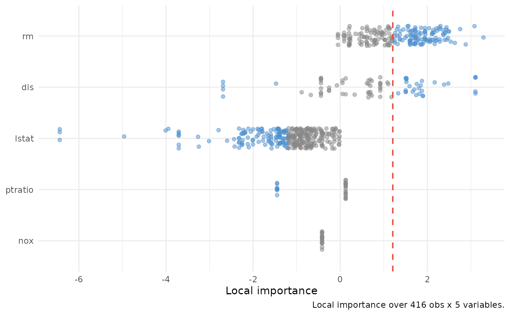

Tidy wrapper around varPro::ivarpro() for the regression or
classification family. Returns one row per (observation, variable)
pair where the local-importance cell is non-NA; classification adds
a class column. which_obs collapses to a per-observation
profile; which_class collapses to a single class. Optional
ivarpro_fit argument lets callers cache the expensive
ivarpro() call.
Usage
gg_ivarpro(
object,
...,
which_obs = NULL,
which_class = NULL,
cutoff = NULL,
ivarpro_fit = NULL
)Arguments
- object
A
varprofit fromvarPro::varpro()(regression or classification family).- ...
Forwarded to
varPro::ivarpro()whenivarpro_fit = NULL; ignored otherwise (with a warning). Documented forwardables:adaptive,cut,cut.max,ncut,nmin,nmax,noise.na,max.rules.tree,max.tree,use.loo,use.abs,scale.- which_obs
Optional integer scalar - 1-based row index into the training data.
NULL(default) returns the aggregate view.- which_class
Optional response level name.
NULLdefault on a binary classification fit resolves to the last factor level (positive-class convention). Ignored with a warning on regression fits.- cutoff
Selection threshold on
|local_imp|.NULL(default) resolves to the per-classmean(|local_imp|)(or per-frame mean for regression). A numeric scalar broadcasts. A named numeric vector (names a subset of class levels) overrides per class with fallback to the per-class mean for missing names.- ivarpro_fit
Optional pre-computed
varPro::ivarpro()result for the sameobject. Shape-validated.
Value
A data.frame of class c("gg_ivarpro", "data.frame").
Regression: columns obs / variable / local_imp / selected.
Classification: long-format with an extra class column.
variable is a factor whose levels are set by
mean(|local_imp|) descending across all rows (the unified
ranking axis shared across facets / panels).
Note
Multivariate regression (regr+) and survival families are
out of scope for this release. The non-regression / non-class
path errors with a message naming v3.1.0 as the tracker.
What this is doing
ivarpro() walks the varPro forest's rules and, for each
(observation, variable) pair, computes a scaled per-rule
contribution to predicting that observation. Per-rule LOO removes
the observation from its own rule before scoring. Per-region
scaling (scale = "local", default) standardises the contribution
by the rule's local response standard deviation so values are
comparable across rules of different size. Aggregating those
per-rule scores into one number per (obs, variable) pair gives the
local_imp cell.
What local_imp actually is (pedantic)
local_imp[i, v] is the scaled aggregated rule contribution of
variable v to predicting observation i, NOT a permutation
importance and NOT a SHAP value. Sign carries direction of the
local response shift inside the rule's region. Magnitude is on
the response scale when scale = "global", or unit-free when
scale = "local" (the default). The matrix is heavily sparse -
an observation contributes only to rules that retain it as OOB; on
real data, per-variable NA fractions of 50-95% are common.
Comparison with gg_varpro() (aggregate split-strength) and
gg_beta_varpro() (per-rule lasso beta) is diagnostic: a variable
that's important globally but has low per-observation contribution
for a specific case is interesting; the inverse - high local but
low global - flags a regime-specific signal.
What's in the output
Long-format tidy frame. Regression has columns obs, variable,
local_imp, selected. Classification adds a class column
(factor in response-level order). variable is a factor whose
levels are set by mean(|local_imp|) descending across all rows;
for classification that aggregate is across all (obs, class) so
every facet / panel shows variables in the same row order. NA
cells are filtered out - the source matrix is sparse, and the
tidy frame only carries the cells where local importance is
defined.
Provenance attribute carries source, family, ntree, cutoff
(named numeric vector - length 1 named "regr" for regression,
length K named with class levels for classification),
cutoff_default, use.loo, scale, n_train, n_obs, n_var,
precomputed, xvar.names, class_levels (classification only),
which_obs, which_class.
What you use this for
Per-observation interpretation ("which variables drive this
prediction?"), variable-selection diagnostics via the aggregate
distribution view, and side-by-side comparison against
gg_varpro() / gg_beta_varpro() to spot variables that matter
locally but not globally (or vice versa).
Caching
ivarpro() is the most expensive call in varPro (per-rule
leave-one-out + per-region scaling, often minutes on real data).
Compute it once and reuse:
v <- varPro::varpro(medv ~ ., data = Boston, ntree = 200)
iv <- varPro::ivarpro(v, scale = "local") # expensive, once
gg_aggregate <- gg_ivarpro(v, ivarpro_fit = iv) # cheap
gg_case1 <- gg_ivarpro(v, ivarpro_fit = iv, which_obs = 1L)Provenance carries precomputed = TRUE when ivarpro_fit was supplied.
Classification
For a classification fit, ivarpro() returns a list of K matrices
(one per class) for multi-class, or a flat data.frame for binary
(positive-class importances only - the wrapper normalises this to
a single-element list under the last factor level). The wrapper
stacks per-class frames into a long-format frame with a class
column. which_class = NULL returns all classes (binary defaults
to the last factor level, the positive-class convention used by
glm and gg_roc); which_class = "<name>" filters to a single
class. cutoff polymorphism mirrors gg_beta_varpro() - NULL
is per-class mean(|local_imp|), a scalar broadcasts, a named
numeric vector overrides per class with fallback to that class's
mean.
Reproducibility
Byte-for-byte agreement between cached (ivarpro_fit = iv) and
uncached (ivarpro_fit = NULL) outputs requires reusing the same
ivarpro() result. set.seed() alone is not sufficient because
per-rule LOO subsampling can drift across separate calls. Reuse
ivarpro_fit when reproducibility matters.
Examples
# \donttest{
if (requireNamespace("varPro", quietly = TRUE) &&
requireNamespace("MASS", quietly = TRUE)) {
set.seed(1)
v <- varPro::varpro(medv ~ ., data = MASS::Boston, ntree = 50)
iv <- varPro::ivarpro(v)
gg <- gg_ivarpro(v, ivarpro_fit = iv)
plot(gg)
}

# }